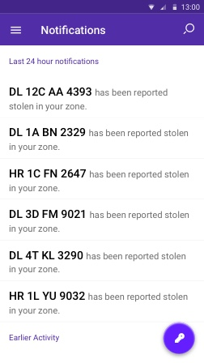
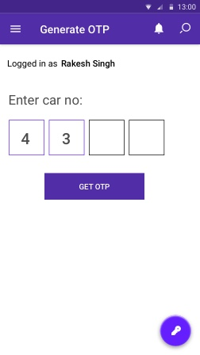
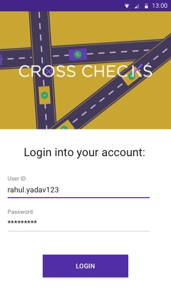
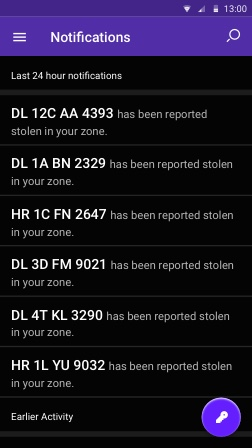
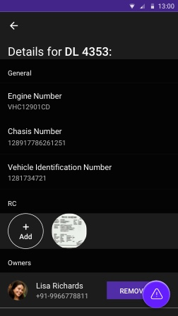

I worked as a Lead Designer for this project. Took care of the UX and the visual design of the application.
Crosschecks is an application that attempts to curb the car theft crimes in New Delhi. The application offers 3 different interfaces for guards, securing the housing societies in Delhi, police, attempting to solve car theft cases and catching car theives and users, who upload information about their vehicles.
Crosschecks is designed to prevent the theft of vehicles from housing societies in New Delhi. These societies are particularly vulnerable during night. The App is designed for Guards, Car Owners and Police Officials. The Guards use the app to ensure that the vehicles leaving and arriving at the society are of valid owners. They generate an OTP for that particular car and then match that with the OTP received by the driver. If the OTP is not matched, the Guard contacts the vehicle owner and verifies the identity of the driver.
The Police officials use the app to get a dynamic list of all the vehicles reported stolen in their designated area. With a list of details about the vehicles stolen, the officials can perform a check on any suspicious vehicle they find, much like guards. They also generate an OTP and confirm it with the driver of the vehicle. If the OTP is not matched, the police official establish contact with the designated police station.
The vehicle owner is requested to upload their vehicle details on the app and keep them updated. The owner also uploads the details of the his/her family on the app. Every member of a family is assumed as an owner of all the vehicles of the family.
When an OTP is generated by a guard or a police official, the same OTP is sent to the owners of the vehicle.
Some sketches we developed early in the process for each of the applications. These cover the UX and the flow of the applications briefly.
Assuming that you have an account (sign up if you don't), let's install the Heroku Client for the command-line. Heroku offers a Mac OS X installer, the Heroku Toolbelt, that includes the client. But for these kind of tools, I prefer using Homebrew. It allows us to keep better track of what we have installed. Luckily for us, Homebrew includes a heroku-toolbelt formula:
The Police officials are provided the details of every theft reported in their designated city area. The list is dynamic and updates with each theft reported. Color is a key component for the officials to track and identify a car. The color is used to quickly identify and memorize a car. The color used is the exact shade of the color as provided the car company with the models.
The Police officials are provided the details of every theft reported in their designated city area. The list is dynamic and updates with each theft reported. Color is a key component for the officials to track and identify a car. The color is used to quickly identify and memorize a car. The color used is the exact shade of the color as provided the car company with the models.



The User App



Assuming that you have an account (sign up if you don't), let's install the Heroku Client for the command-line. Heroku offers a Mac OS X installer, the Heroku Toolbelt, that includes the client. But for these kind of tools, I prefer using Homebrew. It allows us to keep better track of what we have installed. Luckily for us, Homebrew includes a heroku-toolbelt formula:


